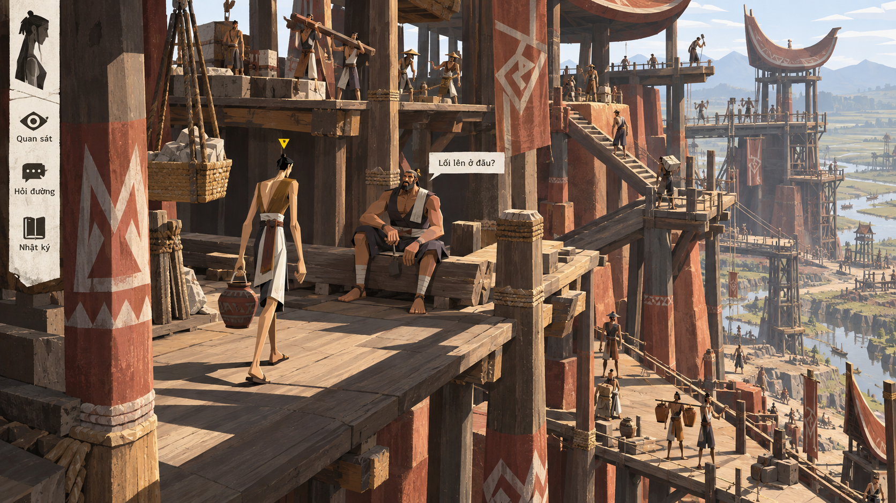

Sáu ảnh thử mở xa hơn cách tổ chức không gian, hình người và UI: ba nhánh từ các mẫu 1–3 vòng 14, cùng ba ngôn ngữ mới để đối chiếu.
Chủ dự án đánh giá Đất dựng thành, Ô đất sống và Làng vòng cung rất tốt, có thể đào sâu. Đây là ưu tiên nghiên cứu, chưa phải chọn một hướng cuối hoặc duyệt Sprint 13.
Ảnh xem trước · Giữ mọi phiên bản tham khảo · Pending user approval
TẦNG KHÔNG GIAN / KHỐI THÀNH ĐẤT
Thành dựng đứng

Thử đưa địa hình thành đất và các khoảng sinh hoạt lên một bố cục dọc, dùng tầng, lối nối và khối lớn để đọc cộng đồng.
Ảnh đề xuất diện mạo game; cảnh và UI trong artwork là raster minh họa. Các nút trên trang chỉ phục vụ xem ảnh.
Chưa tải được ảnh. Kiểm tra thư mục assets của thử nghiệm 15.
Đang xem Thành dựng đứng.
Đổi hướng bằng phím 1 / 2 / 3 / 4 / 5 / 6 hoặc các nút trên. Mở toàn khung hay PNG gốc để xem kỹ. Cỡ chữ trang xem chỉ đổi chữ HTML, không làm chữ trong ảnh reflow.
KHÔNG GIAN / HÌNH / NHÂN VẬT / UI
Giữ mạch đã thích, thử những bước xa hơn.
Ba nhánh đầu thay quy mô hoặc cấu trúc nhìn từ những hướng vòng 14 được ưu tiên. Ba hướng sau thử đa điểm nhìn, cách đọc bằng bóng và phản chiếu. Nhãn mô tả ý định; cần xem ảnh thực tế và ghi phần chưa đạt.
01–03 · Nhánh từ vòng 14/1–304–06 · Hướng mới
Nhiều yếu tố cùng thay đổi để tìm ý tưởng; phản hồi ban đầu so các tổ hợp, chưa quy sở thích cho một biến. Ảnh không chứng minh model, camera, animation, cơ chế gameplay hoặc hình học mới đã có.
01 · TẦNG KHÔNG GIAN / KHỐI THÀNH ĐẤT
Thành dựng đứng
Thử đưa địa hình thành đất và các khoảng sinh hoạt lên một bố cục dọc, dùng tầng, lối nối và khối lớn để đọc cộng đồng.
Câu hỏi thử: Người chơi, lối nối và việc đang diễn ra có còn rõ khi không gian bị đẩy theo chiều đứng? Đây là phép dàn hình, chưa là kiến trúc hoặc walk graph đã xác nhận.
Quan sát bản này: Tầng sàn và đường lên theo chiều đứng đã rõ; người dài và UI dọc nối được với mẫu14/1. Texture/đồ đạc còn dày, quy mô công trình là hư cấu mỹ thuật.
02 · MẶT BẰNG GHÉP MẢNG / ĐƯỜNG NƯỚC
Ghép đảo thủy triều
Thử chia địa bàn nước–đất thành các mảnh hình có nhịp, giữ con người và hoạt động như điểm nhập vai giữa bố cục nhìn từ trên.
Câu hỏi thử: Mảnh hình có giúp đọc đường tiếp cận và cuộc gặp, hay làm game giống một bảng điều khiển? Hình ghép không tự đặt luật di chuyển theo ô.
Quan sát bản này: Đất/kênh/bến đã ghép thành các mảnh rõ, UI cùng màu/hình. Output là góc chéo có khối chứ chưa nhìn thẳng từ trên; không phải ô di chuyển hay luật hex.
03 · Ý ĐỊNH CAMERA CONG / KHỐI MỀM
Làng trên vành trống
Thử đẩy độ cong của cách nhìn rõ hơn, để hình người, mái nhà và đường đi cùng tham gia một nhịp không gian cuộn.
Câu hỏi thử: Độ cong có nhìn thấy được và còn giúp định hướng? Đây là ý tưởng camera/trình bày, không phải làng đặt trên một hành tinh hay trống thật.
Quan sát bản này: Đã thấy cung nền, đường chân trời và UI cùng uốn, khác bản14/3 chưa rõ độ cong. Chi tiết người/nhà vẫn dày; đây là ý tưởng camera, không địa cầu hay mặt trống vật lý.
04 · NHIỀU ĐIỂM NHÌN / HÌNH CÔ ĐỌNG
Địa hình đa diện
Thử một nơi được đọc qua nhiều mặt và hướng nhìn trong cùng khung, thay phối cảnh đơn bằng nhịp mặt phẳng, người và đồ vật.
Hướng mới · Cấu trúc không gian đa điểm nhìn
Câu hỏi thử: Các mặt có nối thành một tình huống chơi hiểu được hay chỉ thành bố cục lạ? Ảnh chưa chứng minh hình học hoặc đường đi bất khả đã được hiện thực.
Quan sát bản này: Biến thể mới ghép mặt bằng, mặt đứng và khuôn mặt nghiêng ở nhiều tỷ lệ rõ hơn. Còn câu hỏi đâu là không gian/đâu là biểu đạt nhân vật; không khẳng định các đường đi đã hợp lệ.
Thử để hình khối gần trắng và các mảng bóng giúp đọc vật, người, khoảng cách và vị trí tương tác.
Hướng mới · Đọc thể tích bằng ánh sáng và bóng
Câu hỏi thử: Khi bề mặt ít màu, bóng có làm rõ người và đồ dùng mà không giấu thông tin cần thấy? Đây là rendering đề xuất, không là phép thuật bóng hoặc cơ chế mới.
Quan sát bản này: Người/cảnh trắng và bóng tiếp xúc giúp đọc khối, nhấn xanh đánh dấu người/selection. Hình học và chất liệu vẫn gần cảnh làng quen thuộc, chưa đạt giản lược mạnh như brief.
06 · PHẢN CHIẾU / KHUNG NHÌN MẶT NƯỚC
Thủy kính
Thử tổ chức một tình huống địa phương qua mặt nước và hình phản chiếu, nối nhân vật, vật dụng và UI bằng cùng ngôn ngữ.
Hướng mới · Cách nhìn qua phản chiếu
Câu hỏi thử: Có còn nhận được ai đang làm gì và nơi có thể tiếp cận? Phản chiếu không cấp quyền thấy sự thật ở xa hoặc dữ liệu nhân vật chưa biết.
Quan sát bản này: Phản chiếu chiếm phần lớn khung, nhân vật trên bờ và portrait/UI thuận chiều. Quang học, người được chọn và nguồn lời nói cần làm rõ hơn; không phải khả năng nhìn xuyên/đọc bí mật.
Thư viện tham khảo — mọi phiên bản được giữ lại
Các mẫu mới bổ sung thư viện; ưu tiên đào sâu 14/1–3 không tự loại những hướng còn lại. Có thể quay lại, so sánh hoặc kết hợp khi chủ dự án quyết định.